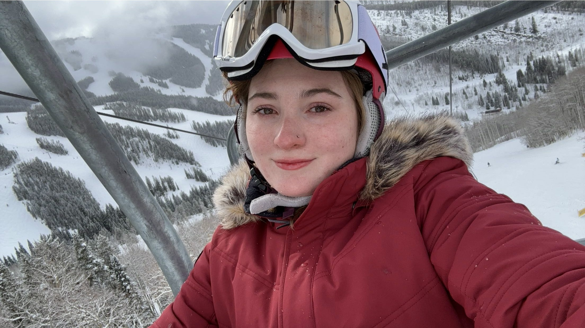
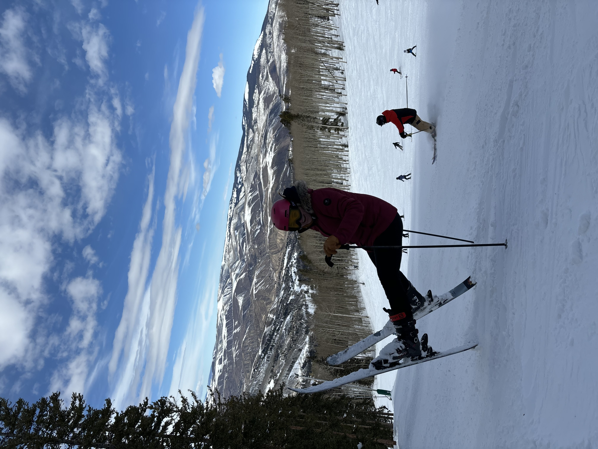
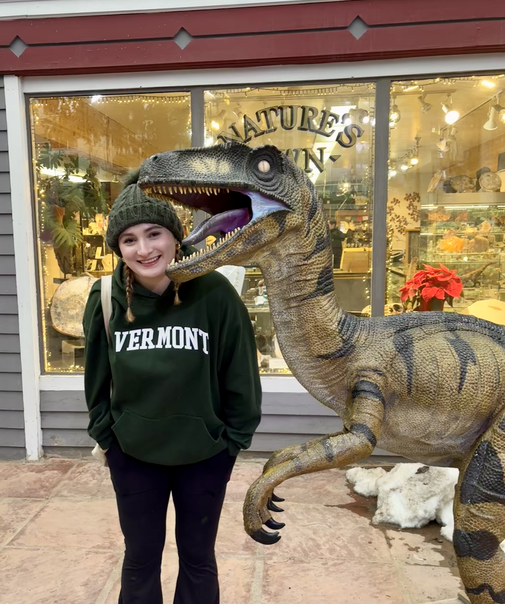
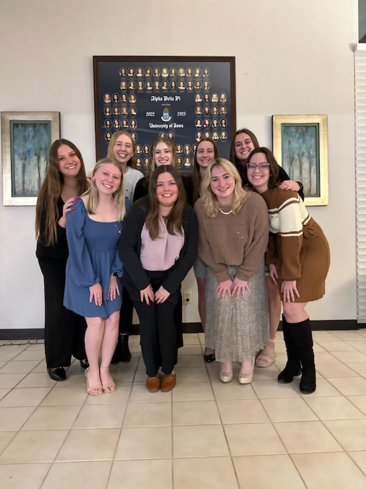
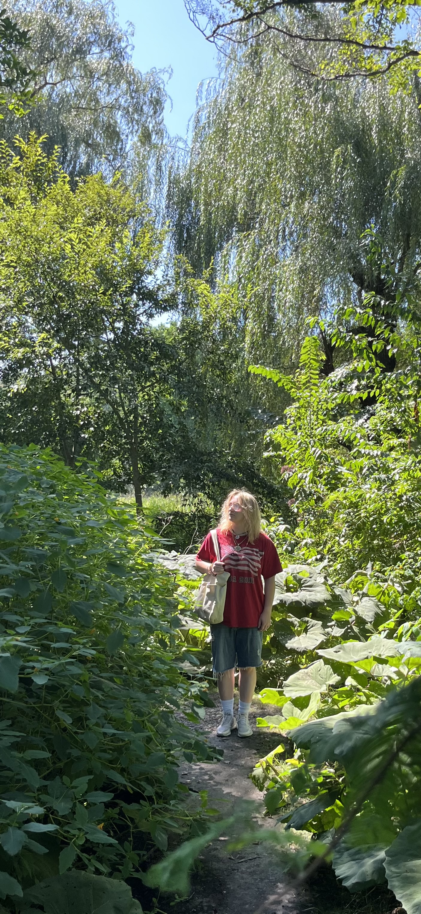

Headshot
Photo credit: Angie Vodraska
About Gabby
Welcome to Gabby's Corner! I'm Gabby, and this is my space to start my first self-made website.
I am currently a senior at the University of Iowa, studying Business Analytics. I intend to graduate this May of 2024 with honors in the degree.
My plan for post-graduation currently is to either attend the University of Iowa's School of Law or to take a gap year and retake my LSAT.
Recent Moments
| Location | Description | Photo |
|---|---|---|
| Colorado 2024 | Exploring the beautiful mountains of Colorado |  |
| Colorado 2024 | Enjoying skiing in the snowy mountains |  |
| Colorado 2024 | Trying out some Ski tricks on the mountain |  |
| Colorado 2024 | Checking out the Dinos in Colorado |  |
| Iowa City 2024 | Last photo taken as Alpha Delta Pi's Vice President of Finance |  |
| Boston 2034 | Visiting Boston's public gardens |  |